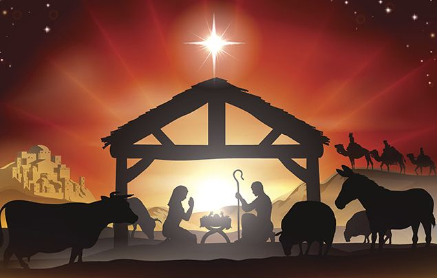
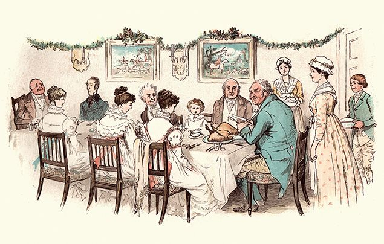

About Christmas
Christmas is celebrated on December 25 and is both a sacred religious holiday and a worldwide cultural and commercial phenomenon. For two millennia, people around the world have been observing it with traditions and practices that are both religious and secular in nature. Christians celebrate Christmas Day as the anniversary of the birth of Jesus of Nazareth, a spiritual leader whose teachings form the basis of their religion. Popular customs include exchanging gifts, decorating Christmas trees, attending church, sharing meals with family and friends and, of course, waiting for Santa Claus to arrive. December 25—Christmas Day—has been a federal holiday in the United States since 1870.
Source text: History website
Facts about Christmas
- Christmas is a Christian festival that celebrates the birth of Jesus Christ, who
Christians believe was the son of God. For most people, it takes place every year on 25
December – the day that the Roman Catholic Church chose to mark Jesus’ birthday. But, in fact,
no one actually knows the exact date Jesus was born!
 - Did you know that not all Christians celebrate Christmas on the same day? In countries with large populations of Orthodox Christians*, such as Russia, the Ukraine and Romania, Christmas Day falls on 7 January. Some Greek Orthodox Christians celebrate Christmas on 7 January, too.
- The name ‘Christmas’ comes from the old English phrase Cristes maesse, which
means ‘Christ’s mass’. But what about ‘Xmas’? Lots of people think this is just a
modern-day abbreviation – but it actually dates back to the 16th century! The ‘X’ is said
to represent the Greek letter ‘Chi’– the first letter in the Greek word for Christ,
Χριστός (pronounced ‘Christos’).
 - Come Christmas, people around the world enjoy all kinds of jolly-good fun! Many of the festive traditions we have in the UK today came about in the Victorian era – such as Christmas cards, gift-giving and crackers, as well as traditional foods like mince pies and roast turkey! Queen Victoria and her husband Prince Albert were huge fans of Christmas, in fact!
- Christmas trees also became popular in Victorian Britain. But these were first seen in
16th Century Germany where, at Christmas time, people decorated fir trees with fruit and
nuts – and later sweets, paper shapes and candles. Amazingly, historians think the origins
of this festive tradition may date back to the Romans and Ancient Egyptians, who used
evergreen plants and garlands as symbols of everlasting life. Wow!
- Check this out – every year, Norway sends a beautiful home-grown Christmas tree to London, where it is decorated with lights in Trafalgar Square. Standing a towering 20m tall, the terrific tree is a gift to say thank you for the help the UK gave Norway during World War II. What a tree-mendous gift!
- We can’t talk about Christmas without a mention to the big bearded, rosy-cheeked jolly man…
Father Christmas! But have you wondered how he got the name Santa Claus? It’s from Sinterklaas,
which means Saint Nicholas in Dutch, the language of the Netherlands. St. Nicholas was a Christian
bishop who lived in the 4th century – known for being kind and generous, he later became the patron
saint of children.

- But Santa isn’t the only Christmas character – there are many more around the world! In Italy, for example, a kind witch called La Befana is said to fly around on a broomstick delivering toys to children! And in Iceland, children leave shoes under the window for 13 mischievous trolls called the Yule Lads. If the child has been good, they’ll find sweets in their shoe – but if they’ve been bad, the Yule lads will leave them a rotten potato!
- We all love to sing along to Jingle Bells, but have you ever noticed that the song doesn’t have the word Christmas in it? Or Jesus or Santa Claus? That’s because it wasn’t originally a Christmas song! In fact, the jolly anthem was written in 1850, entitled One Horse Open Sleigh, for the American holiday, Thanksgiving!
- Now, imagine if there was no Christmas. Does it feel quite strange? Sad, perhaps? Well, believe it or not, in 1644 Christmas celebrations were made illegal in England, and soon after, in the English Colonies in America, too! At that time, members of the government felt that the religious meaning of Christmas had been forgotten, and so banned the holiday festivities. Some people still celebrated in secret, however, until Christmas was once again legal… almost 20 years later!
Source text: National geographic kids